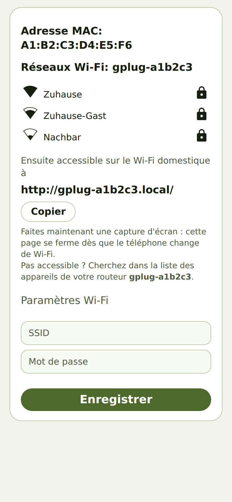
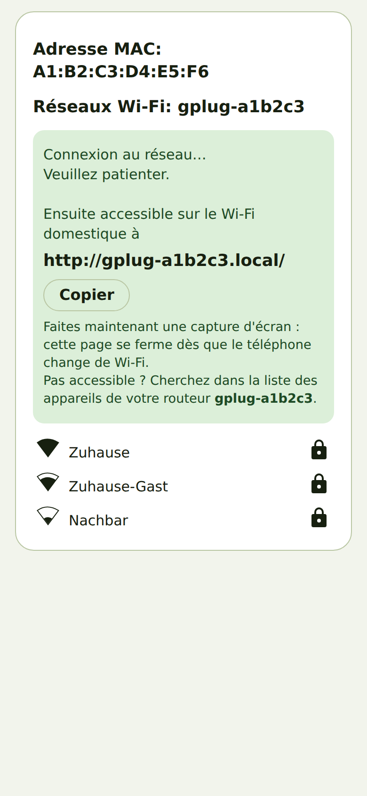

Connecter le gPlug au Wi-Fi
De quoi il s'agit
En tant que nouveau propriétaire d'un gPlug, je veux le connecter à mon Wi-Fi domestique afin de pouvoir ouvrir son application dans un navigateur.
Comment faire
- Branchez le gPlug sur l'interface client du compteur. Tant qu'il ne connaît aucun Wi-Fi, il ouvre
son propre réseau nommé
gPlug-Setup. - Connectez votre téléphone à
gPlug-Setup. Le téléphone ouvre la page de configuration de lui-même ; sinon, ouvrezhttp://192.168.4.1/dans le navigateur. - Touchez votre réseau domestique dans la liste et saisissez son mot de passe sous Paramètres Wi-Fi.

Page de configuration avec les réseaux trouvés - Notez l'adresse sous Ensuite accessible sur le Wi-Fi domestique à – ou touchez Copier. Elle a la forme
http://gplug-xxxxxx.local/. - Touchez Enregistrer. Faites maintenant une capture d'écran : la page se ferme dès que le téléphone
revient sur votre Wi-Fi domestique.

Après l'enregistrement : la future adresse du gPlug - Reconnectez le téléphone à votre Wi-Fi domestique et ouvrez l'adresse notée.
Comment savoir que cela a fonctionné
- L'adresse notée affiche l'assistant de configuration du gPlug.
- Le réseau
gPlug-Setupdisparaît peu après.
Remarques
- La page de configuration suit la langue du téléphone.
- Si l'adresse ne s'ouvre pas, cherchez le gPlug dans la liste des appareils de votre routeur sous
son nom
gplug-xxxxxxet ouvrez son adresse IP.
Vérifié avec le simulateur d'appareil le 30 septembre 2026. Vérifié sur du matériel réel : gPlugK 2026-09-16 (Android).